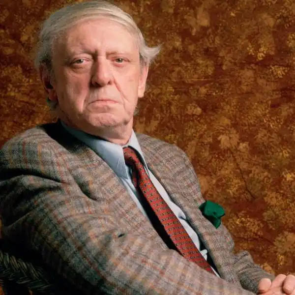
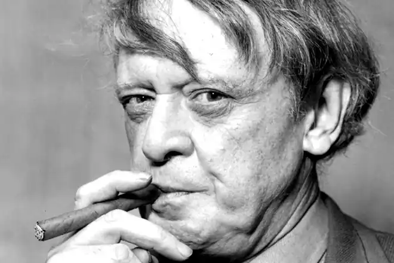

БЕРДЖЕС, Ентоні (Burgess, Anthony; автонім: Джон Ентоні Вілсон — 25.02.1917, Манчестер — 25.11.1993, Лондон) — англійський письменник, композитор і критик.
Народився у католицькій родині, що належала до середнього класу. Батько майбутнього письменника працював касиром, а вечорами підробляв, граючи на фортепіано у манчестерських пабах. Після смерті матері, яка померла в 1919 р. під час епідемії грипу, малий Ентоні протягом деякого часу жив у своєї тітки, а згодом, коли батько одружився вдруге, хлопцем заопікувалася мачуха.
Після коледжу майбутній письменник вступив на факультет англійської мови і літератури Манчестерського університету, який закінчив у 1940 р. Під час Другої світової війни Берджес служив у медичному корпусі британської армії. У 1942 р. він одружився з Лінн Ішервуд Джоне (цей шлюб виявився не досить вдалим — дружина Берджеса зловживала алкоголем і, зрештою, у 1968 р. померла від цирозу печінки). Упродовж 1946—1950 pp. Берджес викладав у Бірмінгемському університеті, працював у регіональних закладах Міністерства освіти, вчителював у Бенбері. Варто зазначити, що до 1959 р. Берджес писав порівняно мало, натомість інтенсивно студіював мистецтво музичної композиції. Свій перший роман "Краєвид з фортечного муру" ("А Vision of Battlement") Берджес написав ще у 1949 p., проте його публікація стала можливою аж у 1965 р. Сюжетною основою твору стала Верґілієва "Енеїда", а в стильовій манері автора роману виразно простежується вплив Дж. Джойса. У 1954 р. Берджес отримав нове призначення: він став одним із освітніх функціонерів колоніальної адміністрації у Малайзії та Брунеї. Тут письменник створив свою "Малайську трилогію", до якої увійшли романи "Час тигра" ("Time for a Tiger", 1956), "Ворог під ковдрою"("The Enemy in the Blanket", 1958), "Ліжка на Сході" ("Beds in the East", 1959). У цих (значною мірою — автобіографічних) книгах Берджес намагається проаналізувати складний процес поступового фізичного і духовного спустошення британського невдахи-чиновника, який усвідомлює безперспективність і абсурдність своєї діяльності в умовах гострої кризи колоніальної системи і посилення боротьби корінного населення за незалежність своєї країни. Життя на чужині підірвало здоров'я Берджеса — у 1959 р. він був змушений повернутися в Англію. Невдовзі лікарі діагностували у Берджеса пухлину головного мозку, попередивши, що жити йому залишилося не більше дванадцяти місяців. Привид близької смерті змусив письменника гарячково працювати, і хоча згодом з'ясувалося, що поставлений йому діагноз був хибним, проте упродовж наступних 33 років він опублікував понад 50 книжок художньої прози і сотні журналістських статей, рецензій та есе. Тут, либонь, варто зауважити, що Берджес — це дівоче прізвище матері письменника, яке він узяв собі за псевдонім, і більшість його творів побачили світ саме під цим ім'ям. Берджес також публікувався під псевдонімом Джозеф Келл, а одного разу навіть написав рецензію на свій роман "Таємний містер Ендербі"("Inside Mr Enderby", 1963), надрукований під цим ім'ям (редактор однієї з британських газет надіслав йому цю книгу на рецензію, не маючи й гадки про те, що Джозеф Келл і Берджес — одна людина). Упродовж 1960—1964 pp. Берджес написав одинадцять романів. У "Неповноцінному насінні" ("The Wanting Seed", 1962) він змальовує перенаселену Англію майбутнього, яка безпорадно знемагає під владою ліберальних і тоталітарних режимів, що постійно змінюють одне одного біля керма влади. У 1962 р. побачив світ і найвідоміший науково-фантастичний роман Берджеса — "Механічний апельсин" ("A Clockwork Orange"). Цей твір набув особливої актуальності на тлі зростання активності підліткових банд і поширення застосування елементів біхевіористської теорії Б.Ф. Скіннера у практиці в'язниць та інших виправних установ, психіатричних клінік і притулків. Сюжет "Механічного апельсина" розгортається у майбутньому Лондоні, а мовою роману є так звана "надцат" — химерна суміш циганської говірки, російського, англійського й американського сленгу, вряди-годи пересипана фрагментами сатиричної прози в дусі "Бостонців" Г. Джеймса. На формування авторського задуму певною мірою вплинула поїздка в СРСР, яку Берджес здійснив у 1961 р. Під час перебування у Ленінграді письменник мав нагоду поспостерігати за тамтешніми "стилягами", і згодом спародіював їхній жаргон та манеру одягатися у "Механічному апельсині". Які ж проблеми порушує Берджес у своєму найвідомішому романі? Алекс, головний герой твору, є неповнолітнім злочинцем, який ґвалтує і вбиває людей. Зрештою, Алекса заарештовують і кидають до в'язниці, де він погоджується на своєрідне "промивання мізків", яке має змінити його жорстоку вдачу і схильність до агресії. Психіатричний експеримент призводить до неочікуваних наслідків: Алекс виходить з тюрми безвольною, жалюгідною істотою, непристосованою для нормального життя в суспільстві. Відтак автор пропонує замислитися над альтернативою: збереження свободи волі (навіть якщо нею можуть скористатися злочинці) чи перетворення суспільно небезпечних людей у "добрих" громадян, які, проте, такої свободи не мають. Знаменно, що оригінальне (лондонське) видання книги завершується фінальним розділом, у якому Алекс з оптимізмом дивиться у добропорядне майбутнє. Натомість американська версія роману має похмурий кінець — Алекс, зрештою, повертається до своєї природної, злої суті: "Але ви, брати мої, згадуйте вряди-годи, яким колись був малюк Алекс. Амінь. І весь отой кал." У 1971 р. американський режисер С. Кубрик зняв фільм за романом Берджеса. Роль Алекса у цій стрічці, яка майже одразу стала культовою, виконав британський актор М. Макдауел. А невдовзі, у 1972 p., творці "Механічного апельсина" стали лауреатами трьох "Оскарів", виборовши нагороди американської Академії кіно за найкращий фільм, режисуру та сценарій. До проблем, окреслених у "Механічному апельсині", Берджес згодом повертався ще не раз (зокрема, у романах "Ендербі: галопом по Європах" ("Enderby outside", 1968) та "Механічний заповіт, або Кінець Ендербі" ("The Clockwork Testament, Or Enderby's End", 1975). Головним героєм цих книг є поет-нонконформіст Ендербі (alter ego автора), устами якого Берджес ущипливо іронізує над споживацькими ідеалами сучасного суспільства, мізерністю його духовних запитів. У 1968 p., після смерті першої дружини, письменник одружився з графинею-італійкою і відтоді більшу частину свого часу проводив у континентальній Європі та США. Проте навіть перебуваючи за кордонами Британії, він часто з'являвся у телевізійних програмах і постійно публікував статті у популярних британських газетах. Берджес багато подорожував: у першій половині 70-х pp. його запрошували викладати у провідних університетах США (Прінстон, Нью-Йорк), а з 1975-го по 1983 pp. (коли померла його друга дружина) письменник жив на Мальті. Упродовж 70—80 pp. XX ст. Берджес опублікував близько 30 книг, серед яких вирізняється роман "Сили земні" ("The Earthly Powers", 1980). Цю книгу багато критиків вважають вершиною творчості Берджеса. Головним героєм роману (і водночас — оповідачем) є 81-річний письменник-гомосексуаліст Кеннет Тумі, образ якого до певної міри пов'язаний з постаттю С. Моема. Крім того, у "Силах земних" дотепно змальовано чимало кумедних ситуацій, учасниками яких виступають інші видатні літератори XX ст. Романи Берджеса характеризуються мовною винахідливістю і насичені елементами соціальної сатири. А з його автобіографій — "Малий Вілсон і великий Бог"("Little Wilson and Big God", 1987) і "Ти відбув свій час" ("You"ve had your time", 1990) — перед очима читачів постає складна, сповнена болісних вагань і сумнівів, особистість, яка має дуже мало спільного з розтиражованим у мас-медіа публічним образом Б. Берджес також написав кілька кіносценаріїв і літературознавчих праць — він був фахівцем з творчості В. Шекспіра і Дж. Джойса. Серед музичних творів Берджеса — кілька симфоній, балет і опера. А його музичну версію роману Дж. Джойса "Улісс" навіть транслювали по британському радіо під час урочин, присвячених сторіччю від дня народження славетного ірландця. Г. Безкоровайний